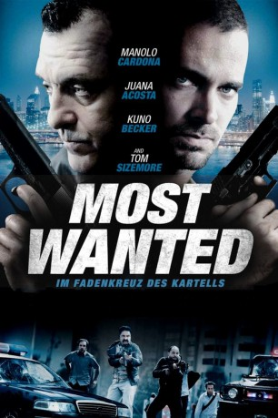
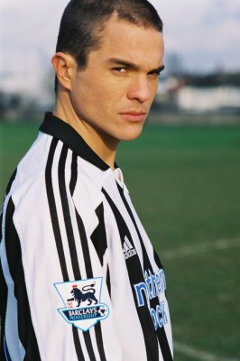
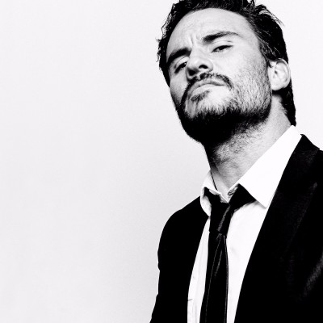
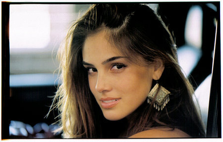

#2797 Most Wanted - Im Fadenkreuz des Kartells
Alternativ: The Snitch Cartel (Englischer Titel)
 
 IMDB-Wertung: 6.5 / 10
IMDB-Wertung: 6.5 / 10  Metascore: 0
Metascore: 0 
Martin Gonzalez is a lower class boy who discovers the world of drug trafficking in the way to upward mobility fundamentally to win the love of Sophia, a good girl, a priori unattainable, which is his love since childhood. His boldness, unconsciousness and youth lead him to become active and vital part of the dangerous "Cartel Norte del Valle", a criminal organization that defines itself as a bloodthirsty and powerful device that overcame the Cali Cartel in cunning military power of corruption and economic strength. Several years of drug and appropriate (bad) friends helped Martin to move up the syndicate, and finally getting the attention of Sofia and win her love.
Jahr: 2011
Dauer: 102 Minuten
FSK: 16
Land: Kolumbien Studio: Lighthouse Home EntertainmentTonspuren:
Untertitel:
Auflösung: 1080p (1920x808) Größe: 6338 MB
Genre: Drama, Krimi
Regisseur: Carlos Moreno, Juancho Cardona
Drehbuch: Luiso Berdejo, Juan Camilo Ferrand, Andrés López
Soundtrack: Carlo Siliotto
Darsteller:
- Manolo Cardona als Martín González 'El Fresita'
- Juana Acosta als Sofía
- Diego Cadavid als Pepe Cadena
 Pedro Armendáriz Jr. als Don Modesto
Pedro Armendáriz Jr. als Don Modesto-  Kuno Becker als Damián
 Tom Sizemore als DEA Agent Sam Mathews
Tom Sizemore als DEA Agent Sam Mathews Adriana Barraza als Abuela Isabel
Adriana Barraza als Abuela Isabel- Robinson Díaz als Milton Jiménez 'El Cabo'
-  Juan Pablo Raba als John Mario Martínez 'Pirulo'
- Saúl Lisazo als Coronel Ramiro Gutiérrez
-  Sandra Echeverría als Eliana
- Rodrigo Oviedo als El Chapo
- Ilja Rosendahl als Guardia USA 1
- Julián Arango als Álvaro José Pérez 'Gaudaña'
- Fernando Solórzano als Óscar Cadena
- Andrés Parra als Alfonso Rendón 'Anestesia'
- Juan Carlos Arango als Gonzalo Tovar 'Buñuelo'
- Santiago Moure als Mario Lopera 'Don Mario'
- Ángela Vergara als Esposa Óscar Cadena
- César Mora als Leonardo Villegas
- Luis Fernando Montoya als Emanuel Villegas
- Julio Rueda als Ignacio 'Nacho' Sotomayor
- Julio Echeverri als Hugo de la Cruz
- Elkin Córdoba als Apolinar S. Santilla 'El Negro Santilla'
- Waldo Urrego als Fermín Urrego 'El Tigre'
- Sandra Hernández als Clarita
- Juan Alfonso Baptista als Gustavo
- Patricio Wood als Abogado NY Roberto Oliva
- Julian Caicedo als Doble Rueda
- Daniela Pinedo als Azafata
- Julieta Cardona als Amelia
- Diego Garzon Flores als Adolescente Martín González 'El Fresita'
- José Calero als Adolescente Pepe Cadena
- Naty Botero als Amiga Sofía
- Hedras Urrego als Hombre que mata a Don Hugo
- Albeiro Peñaloza als Preso mata a Don Hugo
- Jaime Correa als Asesino con Gafas
- Valeria Santo als Ejecutiva NY
- Jessika Grau als Amiga Martín
- Vanesa Mendoza als Amiga 'Anestesia'
- Julieth Román als Novia Damián
- Valentina Garajales als Amiga Sofía Univeridad
- Daniel Posada als Secuestrador 1
- Jesús Álvarez als Secuestrador 2
- Edward Niño als Hombre pequeño Matrimonio
- Margarita Peña als Amiga Sofía Univeridad
- Juan Cifuentes als Hijo de Don Óscar
- Jorge Alberto Puig als Cubano NY
- Elijah Chevon als Jamaiquino
- Juliana Arroye als Latina Ascensor
Datei: X:\2011(G-M)\Most Wanted - Im Fadenkreuz des Kartells (2011, FSK16, 1920x808).mkv seit 16.12.2015
Festplatte: HD 2011(G-Z)
 Es gibt insgesamt 100 Filme in der Gruppe '2011(G-M)'
Es gibt insgesamt 100 Filme in der Gruppe '2011(G-M)'